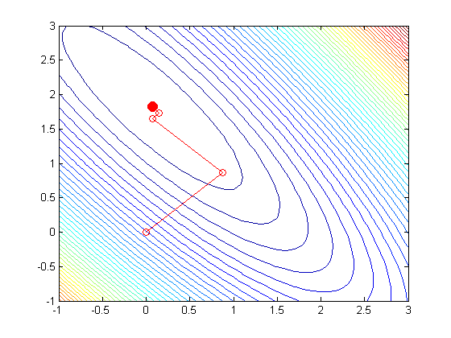

function steepestDescentDemoRss()
setSeed(2);
n = 20;
x = randn(n,1);
wtrue = [1 1];
sigma = 1;
y = wtrue(1) + wtrue(2)*x + sigma*randn(n,1);
X = [ones(n,1),x];
d = 2;
condnumber = 20; a = randn(d,1);
[Sigma] = covcond(condnumber,a);
model = struct('mu', zeros(d, 1), 'Sigma', Sigma);
X = gaussSample(model, n);
y = wtrue(1)*X(:,1) + wtrue(2)*X(:,2) + sigma*randn(n,1);
function [f,g] = rssObj(W)
if isvector(W)
k = 1;
else
W = W';
k = size(W,2);
end
f = zeros(1,k);
for i=1:n
yhat = X(i,:)*W;
f = f + (yhat-y(i)).^2;
end
if nargout >= 2
w = W;
assert(k==1);
g = X'*(X*w-y);
end
end
fn = @(W) rssObj(W);
[x1 x2] = meshgrid(-1:0.1:3, -1:0.1:3);
Z = fn([x1(:), x2(:)]);
Z = reshape(Z, size(x1));
figure;
contour(x1,x2,Z,50)
hold on
wOLS = X\y;
h=plot(wOLS(1),wOLS(2),'ro'); set(h,'markersize',10,'markerfacecolor','r');
x0 = [0; 0];
global xhist fhist funcounthist
xhist = [];
if 1
x = steepestDescent(fn, x0, '-maxIter', 10, ...
'-exactLineSearch', true, '-outputFn', @optimstore);
else
stepSize = 0.1;
x = steepestDescent(fn, x0, '-maxIter', 20, ...
'-stepSize', stepSize, '-outputFn', @optimstore);
end
hold on;
plot(xhist(1,:), xhist(2,:), 'ro-');
end
